Daftar Isi
1. Login ke PAS
- Buka alamat PAS kampus melalui browser.
- Masukkan NIM atau email.
- Masukkan password. Untuk akun baru, ikuti password awal yang diberikan kampus.
- Centang Tetap masuk sampai logout manual hanya pada perangkat pribadi.
- Klik Login.
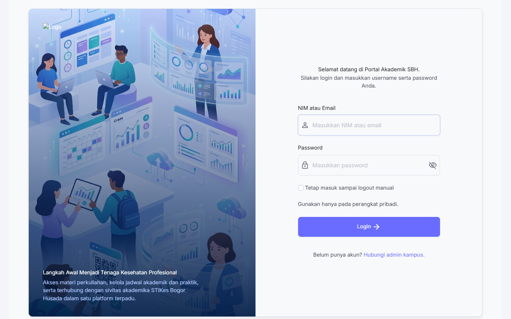
2. Dashboard dan Semester Aktif
Dashboard merangkum semester aktif, pengumuman LMS, kalender akademik, dan informasi akademik mahasiswa.
- Setelah login, periksa semester dan Tahun Akademik pada jendela Pilih Semester Aktif.
- Pilih semester yang sedang ditempuh lalu klik Simpan.
- Jika semester tidak sesuai, jangan melanjutkan pengajuan KRS; hubungi BAAK.
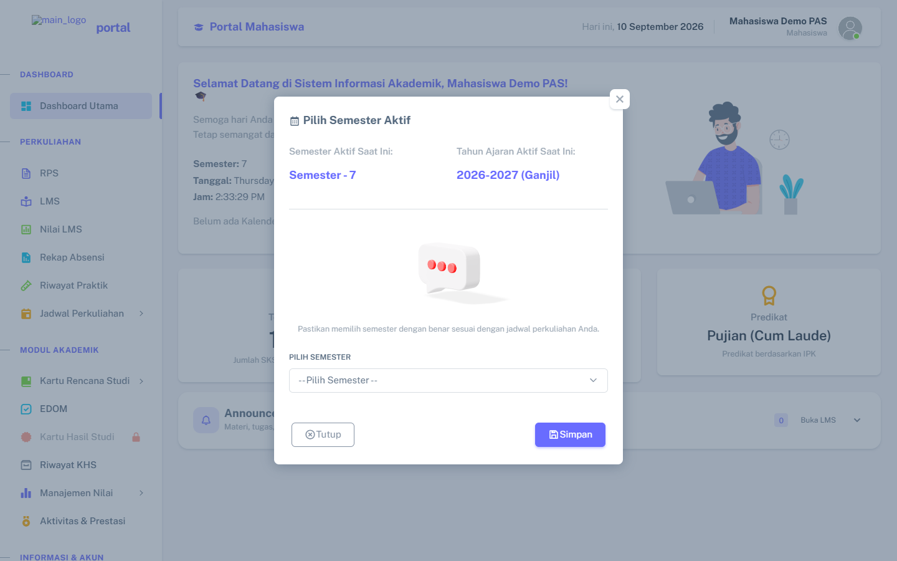
3. Modul Perkuliahan
3.1 RPS
Buka menu RPS untuk melihat status dan dokumen Rencana Pembelajaran Semester yang diunggah dosen. Gunakan tombol lihat/unduh pada mata kuliah yang tersedia.
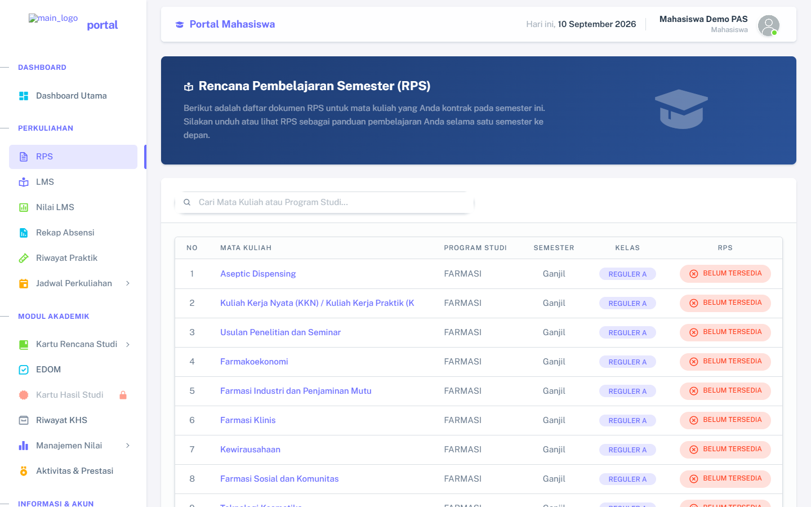
3.2 LMS
Menu LMS berisi kelas yang diambil pada KRS. Klik Buka Kelas untuk melihat pertemuan, materi, tugas, dan kuis. Kalender LMS menampilkan jadwal unggahan dan tenggat; catatan pribadi hanya terlihat oleh pemilik akun.
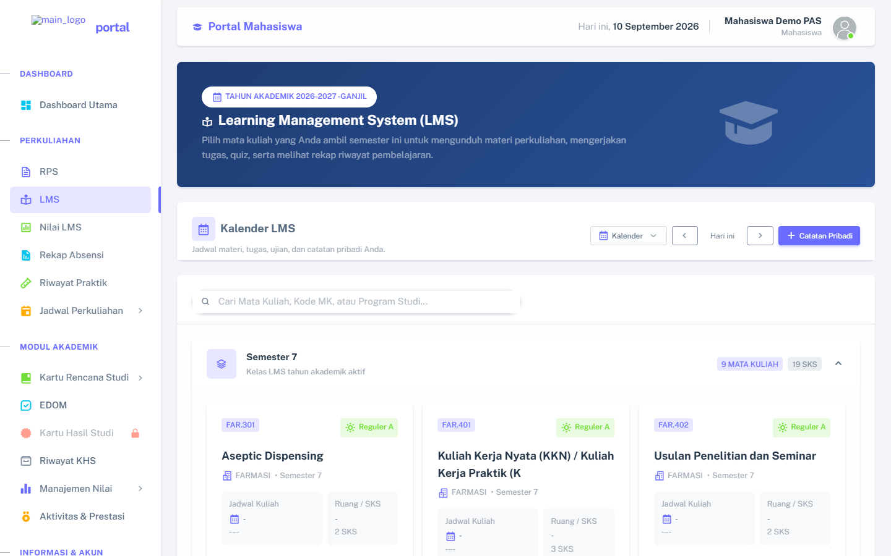
3.3 Nilai LMS
Buka Nilai LMS untuk melihat rekap nilai tugas dan kuis per mata kuliah. Nilai LMS dapat menjadi komponen Nilai KHS sesuai persentase akademik yang berlaku.
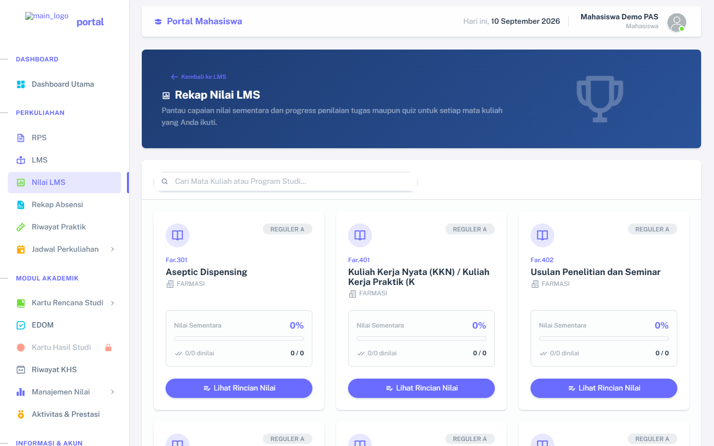
3.4 Rekap Absensi
Buka Rekap Absensi, pilih semester, lalu lihat ringkasan H (Hadir), S (Sakit), I (Izin), dan A (Alfa). Riwayat praktik hanya menampilkan mata kuliah KRS yang mempunyai kegiatan praktik.
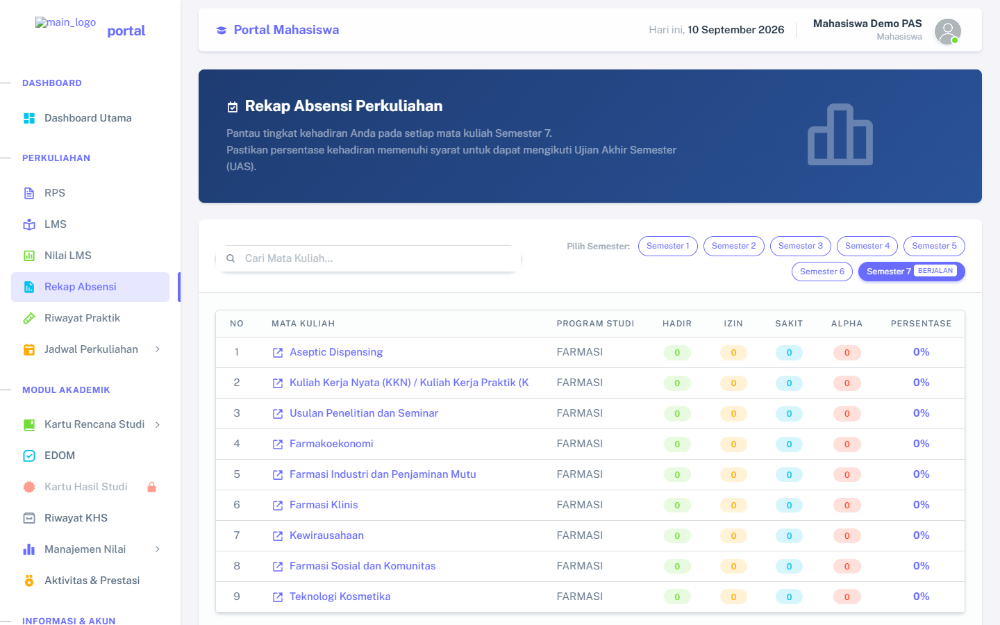
3.5 Jadwal Perkuliahan
Gunakan menu Jadwal Perkuliahan untuk membuka jadwal kuliah, praktik, UTS, UAS, dan UAP jika tersedia untuk program studi.
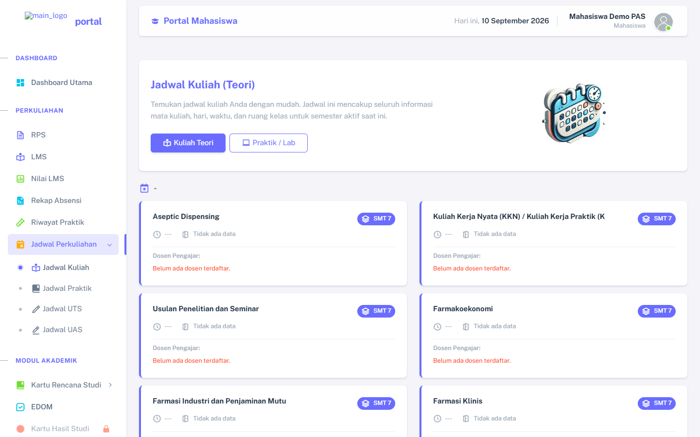
4. Kartu Rencana Studi
4.1 Pengajuan KRS
- Buka Kartu Rencana Studi → Pengajuan KRS.
- Periksa mata kuliah wajib dan pilihan.
- Centang mata kuliah yang akan diambil.
- Periksa total SKS, lalu klik Simpan KRS.
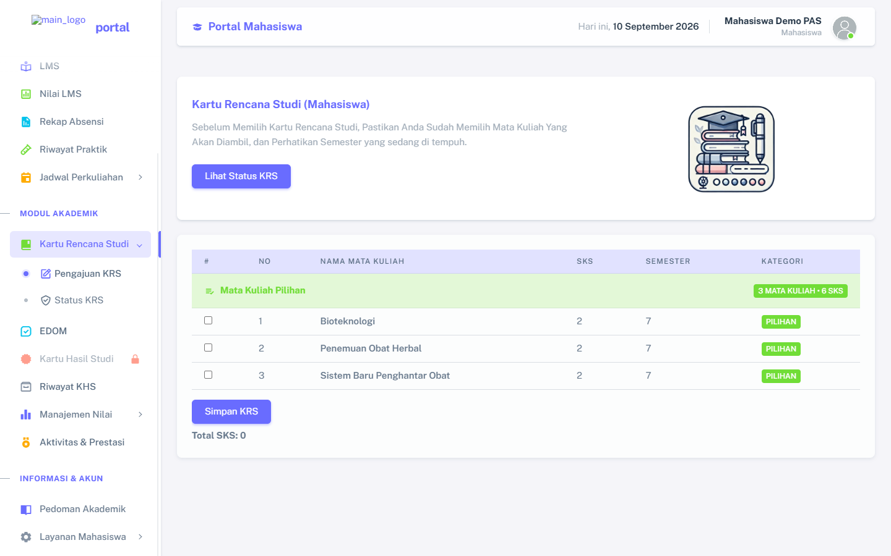
4.2 Status KRS dan Komunikasi Dospem
Buka Status KRS untuk memantau persetujuan dosen pembimbing. Mahasiswa dapat membaca komentar dospem dan mengirim umpan balik. Tombol cetak mahasiswa tersedia setelah KRS disetujui.
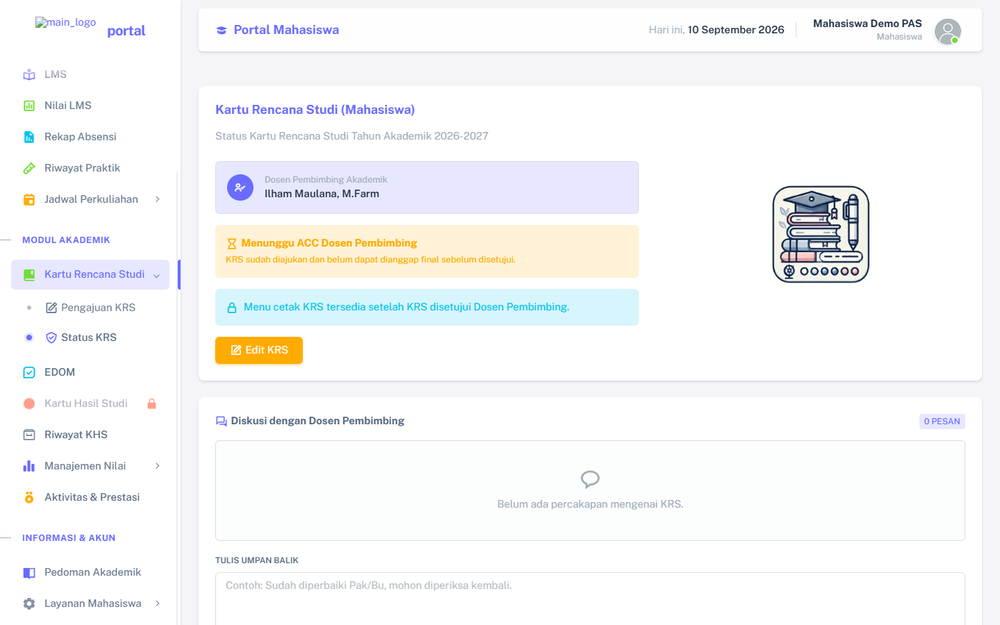
5. Evaluasi Dosen Mengajar (EDOM)
EDOM wajib diselesaikan sebelum KHS pada periode terkait dapat dilihat.
- Buka menu EDOM.
- Pastikan Tahun Akademik pada bagian atas sudah benar.
- Pilih dosen pada setiap mata kuliah.
- Isi seluruh pertanyaan dan saran, lalu kirim.
- Selesaikan semua dosen yang tampil.
- Untuk EDOM lama, buka Riwayat KHS, pilih TA, lalu klik Buka EDOM. Sistem akan membawa TA yang dipilih.
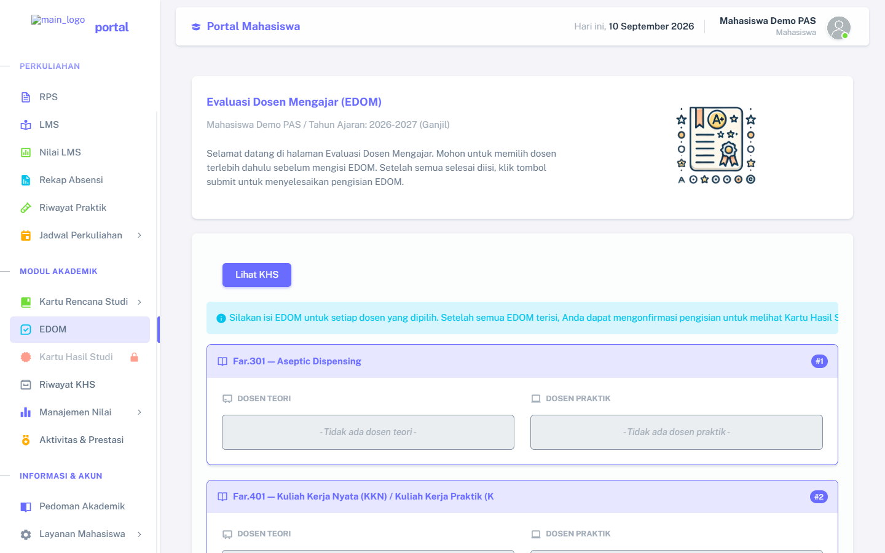
6. KHS dan Riwayat KHS
6.1 Kartu Hasil Studi Semester Berjalan
KHS semester berjalan hanya dapat dibuka setelah nilai diterbitkan oleh BAAK, akses akademik mahasiswa aktif, dan EDOM periode tersebut selesai.
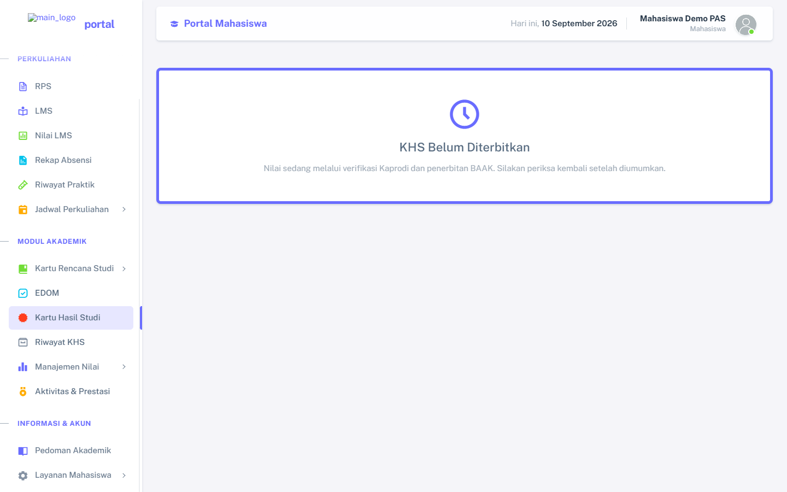
6.2 Riwayat KHS
- Buka Riwayat KHS.
- Pilih Tahun Akademik sebelumnya.
- Klik Tampilkan Riwayat.
- Jika terkunci karena EDOM, klik Buka EDOM dan selesaikan EDOM pada TA tersebut.
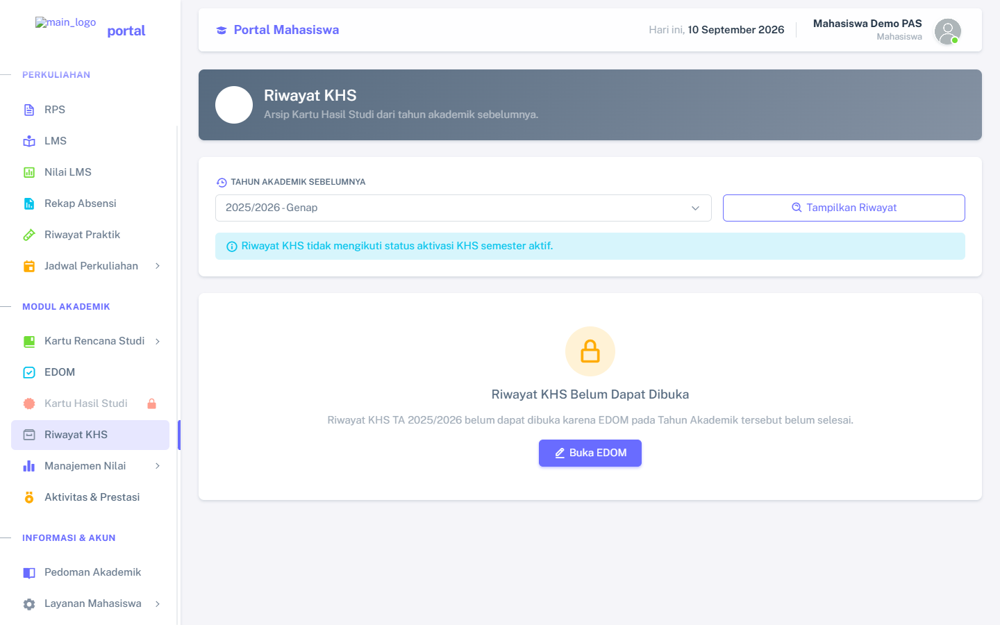
7. Informasi dan Layanan Mahasiswa
7.1 Pedoman Akademik
Buka Pedoman Akademik untuk melihat atau mengunduh PDF resmi yang diterbitkan BAAK.
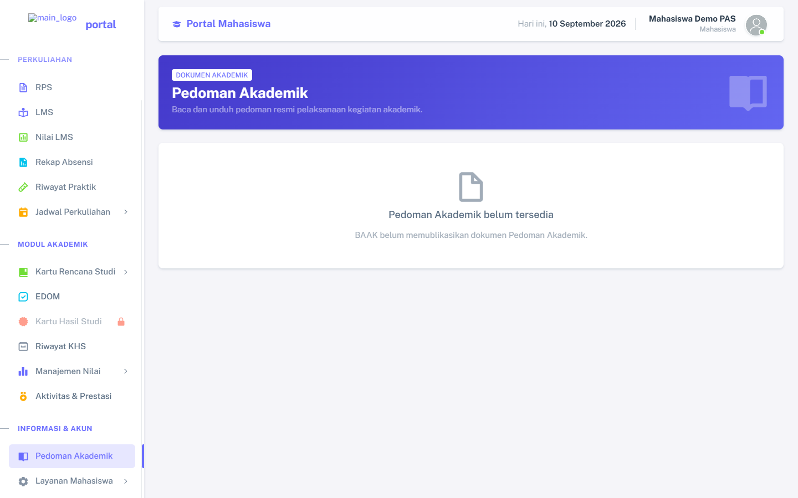
7.2 Feedback & Saran
Buka Layanan Mahasiswa → Feedback & Saran. Isi judul, kategori, dan uraian secara jelas. Permintaan dikirim langsung kepada admin melalui PAS.
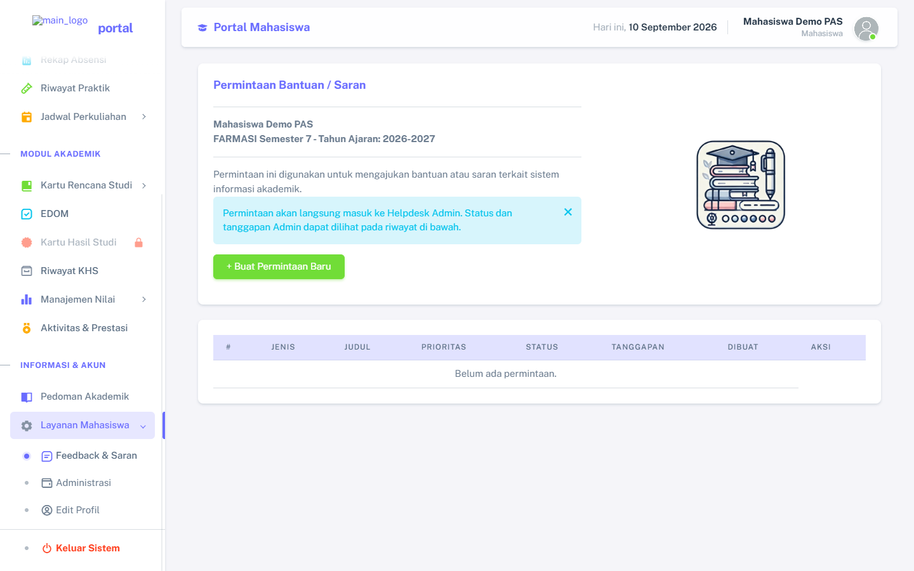
7.3 Profil dan Logout
Gunakan Edit Profil untuk memperbarui data yang diizinkan. Untuk keluar, pilih Layanan Mahasiswa → Keluar Sistem.
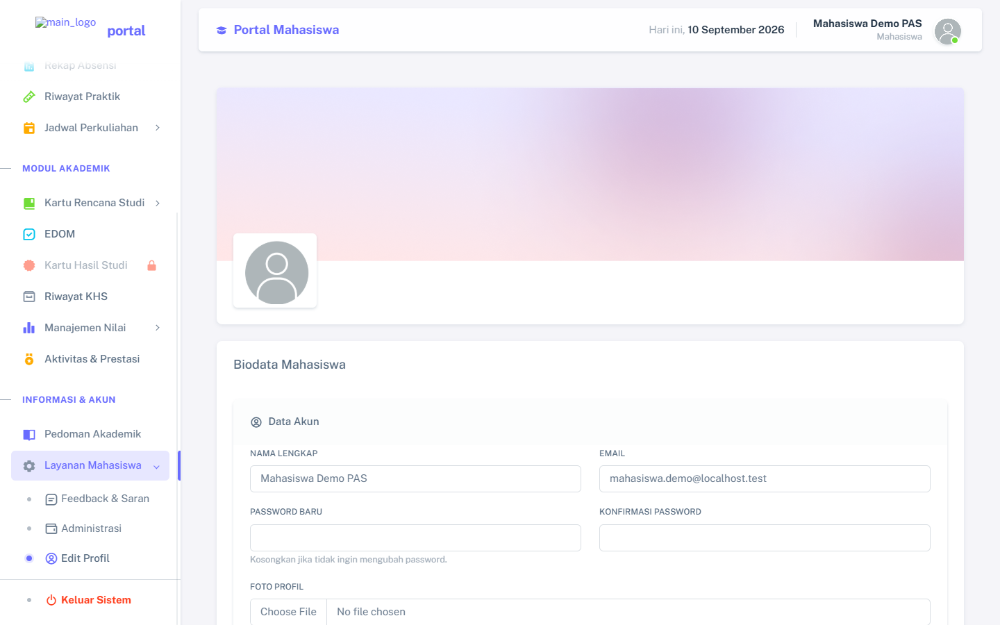
8. Penanganan Masalah Umum
- Jika halaman tidak berubah, lakukan refresh dengan Ctrl + F5.
- Jika sesi berakhir, login kembali; sistem akan menampilkan pemberitahuan sesi logout.
- Jika mata kuliah tidak muncul di LMS/jadwal, pastikan mata kuliah ada pada KRS dan kelas Reguler A/B sesuai.
- Jika KHS terkunci, periksa EDOM, status penerbitan BAAK, dan status akademik.
- Jika dokumen 404, kirim laporan melalui Feedback & Saran dengan nama menu dan dokumen.
- Jangan membagikan password, file tugas, atau tautan akun kepada orang lain.